קאפיטל 9
האנדא סענסינג און דרייווער-הילף
זייטן 147–172 אינעם PDF
וואס איז Honda Sensing
Honda Sensing איז Honda'ס נאמען פאר די גרופע דרייווער-הילף סיסטעמען וואס זענען איינגעבויט אין אייער CR-V. דער מאנואל באשרייבט זיי אלס סיסטעמען וואס העלפן מיט גאז געבן, ברעמזן און דרייען, כדי צו פארלייכטערן דעם דרייווער, און כדי צו העלפן אויסמיידן א קראך אדער אים מאכן ווייניגער שווער. דער מאנואל טיילט זיי אויף אין צוויי גרופעס. די ערשטע גרופע ארבעט פון זיך אליין יעדעס מאל וואס איר דרייווט, אן קיין קנעפל צו דריקן. די צווייטע גרופע מוזט איר אליין אנצינדן מיט די קנעפלען אויפן שטייער-ראד. די גרופע איז adaptive cruise control, lane keeping assist און traffci jam assist.
Honda'ס אפיציעלע 2026 ספעציפיקאציעס ווייזן אז די פאלגנדע Honda Sensing פונקציעס זענען סטאנדארט אויפן EX:
- Collision Mitigation Braking System (CMBS) (קראך-פארמיידונג ברעמז סיסטעם) מיט Forward Collision Warning (FCW) (ווארנונג פון א קראך פאראויס)
- Road Departure Mitigation System (RDM) (העלפט נישט ארויסגיין פון וועג) מיט Lane Departure Warning (LDW) (ווארנט ווען דער קאר גייט ארויס פון ליין)
- Adaptive Cruise Control (ACC) (קרוז וואס האלט אפשטאנד) מיט Low-Speed Follow (נאכגיין אויך ביי פאמעלעכע גיכקייט)
- Lane Keeping Assist System (LKAS) (העלפט בלייבן אין ליין)
- Traffci Jam Assist (הילף אין טראפיק)
- Traffci Sign Recognition (TSR) (דערקענט וועג-שילדן)
- Auto high-beam headlights (אויטאמאטישע הויכע ליכט)
דער EX האט אויך צוויי סיסטעמען וואס דער LX האט נישט: דעם Blind Spot Information System (BSI) (ווארנט פון א קאר אין בלינדן ווינקל) און Cross Traffci Monitor (ווארנט פון קארס פון די זייטן ביים צוריקגיין(. Honda'ס פיטשער-גייד שרייבט אז דער Driver Attention Monitor)קוקט אויף דעם דרייווער'ס אויפמערקזאמקייט) איז סטאנדארט אויף יעדן טרים. דער מאנואל באשרייבט אויך Low Speed Braking Control און פארנט און הינטן פארקינג סענסארס. ביידע זענען EX-L עקוויפמענט, דעריבער האט אייער EX זיי נישט, און דער קאפיטל רעדט נישט פון זיי.
אייער EX'ס Honda Sensing סיסטעמען אין קורצן
| סיסטעם | ווי עס צינדט זיך אן | וואו איר קאנטראלירט עס |
|---|---|---|
| CMBS + FCW | אויטאמאטיש | Safety Support סקרין און Vehicle Settings |
| RDM + LDW | אויטאמאטיש | Safety Support סקרין און Vehicle Settings |
| Traffic Sign Recognition | אויטאמאטיש | Vehicle Settings |
| Auto High-Beam | אויטאמאטיש | Vehicle Settings און ליכט שאלטער |
| סיסטעם | ווי עס צינדט זיך אן | וואו איר קאנטראלירט עס |
|---|---|---|
| BSI | אויטאמאטיש | Safety Support סקרין |
| Cross Traffic Monitor | אויטאמאטיש | טאטש-סקרין |
| Driver Attention Monitor | אויטאמאטיש, שטענדיג אן | Meter settings |
| ACC, LKAS, Traffic Jam Assist | קנעפלען אויפן שטייער-ראד | שטייער-ראד |
די גרונט-רעגל: די סיסטעמען העלפן נאר
יעדע איינע פון די סיסטעמען העלפט אייך נאר. דער מאנואל זאגט אז CMBS פארמיידט נישט קיין קראכן און שטעלט נישט אפ דעם קאר אויטאמאטיש. ער זאגט אויך אז LKAS איז נישט קיין זעלבסט-דרייווענדיגע סיסטעם, און עס דארף שטענדיג דעם דרייווער'ס אויפמערקזאמקייט און קאנטראל. האלט די הענט אויפן ראד, די אויגן אויפן וועג, און דעם פוס גרייט פארן ברעמז.
די סענסארס: איין קאמערע, עטליכע ראדארס
פארנט סענסאר קאמערע
די פארנט סענסאר קאמערע זיצט הינטער דעם שפיגל אויבן ביי דער פארנט שויב. CMBS, RDM, ACC, LKAS, Traffci Jam Assist, Traffci Sign Recognition און Auto High-Beam ניצן אלע די קאמערע.
היץ איז דער גרעסטער שונא פון דער קאמערע. אין זומער רעקאמענדירט דער מאנואל צו פארקן אין שאטן, אדער אז דער פראנט פונעם קאר זאל נישט קוקן צו דער זון. אויב איר ניצט א גלאנצנדיגע זון-שאטן, לאזט עס נישט צודעקן דעם קאמערע-קאסטן, ווייל דאס זאמלט די היץ אויף דער קאמערע.
אויב עס ווייזט זיך "Some driver assist systems cannot operate: Camera temperature too high" (די קאמערע איז צו הייס)
- ניצט די קליימעט קאנטראל צו אפקילן דעם קאר אינעווייניג.
- אויב נויטיג, קלייבט אויס defroster מאדָע און ריכט די לופט צו דער קאמערע.
- הייבט אן צו דרייוון. דאס קילט אפ די שויב און די געגנט ארום דער קאמערע.
אויב עס ווייזט זיך "Some driver assist systems cannot operate: Clean front windshield or poor viewing condition" (רייניגט די שויב אדער שלעכטע זעאונג)
- פארקט אויף א זיכער ארט.
- טשעקט די פארנט שויב און רייניגט זי אויב זי איז שמוציג.
- אויב די מעלדונג בלייבט נאך וואס איר דרייווט א שטיק צייט, לאזט טשעקן דעם קאר ביים דילער.
רעגלען פונעם מאנואל וויאזוי צו היטן די קאמערע:
- קיינמאל נישט קלעבן קיין פילם אדער צוטשעפענען גארנישט אויף דער שויב, האוד אדער פארנט גריל וואו עס קען צודעקן די קאמערע'ס בליק.
- לייגט נישט קיין זאכן אויבן אויפן דעשבארד. זייער שפיגלונג אין דער שויב קען שטערן די קאמערע פון זען די ליין-ליניעס.
- רירט נישט אן די קאמערע לינז, און האלט דעם שויב-רייניגער אוועק דערפון.
- קריצן, קליינע שאדנס אדער שפליטערס אין דער קאמערע'ס בליק-פעלד קענען מאכן אז די סיסטעמען זאלן נישט ארבעטן ריכטיג. Honda רעקאמענדירט אן ארגינעלע Honda שויב פארן טוישן. אפילו קליינע פארריכטונגען אין יענער געגנט, אדער א נישט-ארגינעלע שויב, קענען מאכן פראבלעמען.
- נאך יעדן טויש פון דער שויב מוז א דילער נאכאמאל קאליברירן די קאמערע.
- אויב די קאמערע באקומט א שטארקן קלאפ, אדער די געגנט נעבן איר דארף פארריכטן, פרעגט ביים דילער.
פארנט ראדאר סענסאר
דער ראדאר זיצט הינטער'ן Honda עמבלעם אויף דער פארנט גריל. CMBS און ACC ניצן אים ביידע.
- האלט דעם עמבלעם און די גריל ריין, נאר מיט וואסער אדער א מילדע זייף. קיינמאל נישט ניצן כעמישע סאלווענטן אדער פאליר-פולווער.
- קלעבט נישט קיין סטיקערס און פארבט נישט דעם עמבלעם אדער די גריל, און קריצט זיי נישט און מאכט זיי נישט קאליע.
- טוישט נישט דעם עמבלעם, די גריל אדער דעם באמפער, און קיינמאל נישט ארויסנעמען אדער צונעמען דעם ראדאר.
- פרעגט ביים דילער אויב דער ראדאר-דעקל באקומט א שטארקן קלאפ, אדער די גריל אדער באמפער דארף פארריכטן.
- לאזט טשעקן די סיסטעם נאך א פראנט קראך, נאך דרייוון דורך אדער זיין אונטערגעטונקען אין טיפע וואסער, אדער נאך א שטארקן קלאפ אין א הויכקייט, קורב, טשאק, שיפוע אדער בערגל וואס קען אפרוקן דעם סענסאר.
BSI און Cross Traffci Monitor ניצן באזונדערע ראדאר סענסארס אין די עקן פונעם הינטערשטן באמפער. מען רעדט פון זיי שפעטער אין דעם קאפיטל.
קאנטראלן און דיספלייס
קנעפלען אויפן שטייער-ראד
די דריי סיסטעמען וואס מען צינדט אן אליין ווערן קאנטראלירט פונעם שטייער-ראד. דער אלגעמיינער אויסשטעל פונעם ראד ווערט ערקלערט אין קאפיטל 6. די טאבעלע אונטן רעדט נאר פון די Honda Sensing פונקציעס.

ACC און LKAS קנעפלען
| קנעפל | פונקציע |
|---|---|
| ACC קנעפל | שטעלט ACC אין standby (גרייט); נאכאמאל דריקן לעשט עס אויס |
| LKAS קנעפל | שטעלט LKAS און Traffic Jam Assist אין standby, אדער לעשט זיי אויס |
| Interval קנעפל | טוישט ACC'ס אפשטאנד פון קאר פאראויס; האלטן טוישט צו געווענליכן קרוז |
| CANCEL | שטעלט אפ ACC אן אויסלעשן די סיסטעם |
| −/RES/+ SET ארויף | שטעלט אדער ברענגט צוריק די גיכקייט, דערנאך הייבט עס העכער |
| −/RES/+ SET אראפ | שטעלט די גיכקייט, דערנאך לאזט עס נידעריגער |
קאליר-קאדן אויפן מיטער
דער 7-אינטש מיטער (וואס דער מאנואל רופט A-type meter) ניצט דעם זעלבן קאליר-קאד פאר ביידע הויפט אינדיקאטארן.


אינדיקאטאר קאלירן
| דיספליי | גרין | ווייס | געל |
|---|---|---|---|
| ACC אינדיקאטאר | סיסטעם אן | Standby | פראבלעם |
| LKAS אינדיקאטאר | ארבעט | Standby | פראבלעם |
| ליין-ליניעס | LKAS ארבעט | ליניעס דערקענט | ארויסגיין פון ליין דערקענט |
ווען ACC ארבעט, ווייזט דער מיטער אויך א קאר-בילדל, די interval שטריכן פאר אייער אפשטאנד, און די גיכקייט וואס איר האט געשטעלט.
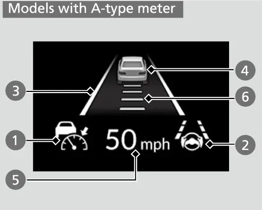
וואו מען שטעלט איין די אויטאמאטישע סיסטעמען
די אויטאמאטישע סיסטעמען ווערן קאנטראלירט דורך דעם driver information interface (אינפארמאציע דיספליי) אינעם מיטער. CMBS, RDM און BSI ווערן אן- און אויסגעלאשן אויפן Safety Support סקרין. פיינערע איינשטעלונגען זענען אין Vehicle Settings. דא געפינט זיך די קראך-ווארנונג אפשטאנד, די RDM Warning only ברירה, די פארשידענע ביפס, Traffci Sign Recognition און Auto High-Beam. Cross Traffci Monitor איז אן אויסנאם, ווייל עס ווערט אנגעצונדן אויפן טאטש-סקרין. וויאזוי מען גייט פון איין מיטער סקרין צום אנדערן ווערט ערקלערט אין קאפיטל 6.


Collision Mitigation Braking System (CMBS) און Forward Collision Warning
CMBS (קראך-פארמיידונג ברעמז סיסטעם) קוקט אויפן וועג פאראויס מיט ביידע, די קאמערע און דעם ראדאר. לויטן מאנואל קען עס העלפן ווען עס איז דא א מעגליכקייט פון א קראך מיט איינס פון די פאלגנדע:
- א קאר פאראויס, אריינגערעכנט א מאטארסייקל
- א קאר וואס קומט אנטקעגן
- א קאר וואס קומט פון דער זייט
- א פוסגייער
- א מענטש וואס פארט אויף א פארנדיגן בייסיקל
Honda'ס פיטשער-גייד ערקלערט אז CMBS נעמט אריין Forward Collision Warning (ווארנונג פון א קראך פאראויס), וואס איז דער ווארן-טייל פון דער סיסטעם. CMBS ווארנט אייך קודם. אויב איר רעאגירט נישט, קען עס ברעמזן כדי צו פארמינערן אייער גיכקייט און ווי שווער דער קלאפ איז. עס איז אייער רעזערוו, קיינמאל נישט אייער הויפט ברעמז.
די דריי ווארן-שטאפלען
CMBS ווארן-שטאפלען
| שטאפל | מצב | ווארנונגען | ברעמזן |
|---|---|---|---|
| איינס | סכנה פון א קראך | ליכטיגע בלינקן; א קלאנג קומט צו אויב דער אפשטאנד ווערט נאך קלענער | קיין |
| צוויי | גרעסערע סכנה, ווייניגער צייט צו רעאגירן | ליכט און קלאנג | לייכט |
| דריי | דער קראך ווערט גערעכנט אז מען קען אים נישט אויסמיידן | ליכט און קלאנג | שטארק |
איינשטעלונגען און ווי עס פירט זיך
אין Vehicle Settings קענט איר אויסקלייבן ביי וועלכן אפשטאנד די ערשטע ווארנונג קומט: Long, Normal אדער Short. Long ווארנט ווייטער פונעם קאר פאראויס און Short ווארנט נענטער. אויף פולע שטאט גאסן געפינען טייל דרייווערס אז Normal אדער Short געבן ווייניגער פרי ווארנונגען. קלייבט אויס די איינשטעלונג וואס האלט אייך אויפמערקזאם.
- CMBS ווערט אן- און אויסגעלאשן אויפן Safety Support סקרין.
- עס צינדט זיך צוריק אן יעדעס מאל וואס איר הייבט אן דעם מאטאר, אפילו אויב איר האט עס אויסגעלאשן די לעצטע פאר.
- מען קען עס נישט אויסלעשן בשעת'ן דרייוון.
- ווען CMBS ארבעט שוין, ארבעט עס ווייטער אויב איר דריקט א טייל אויפן גאז. דריקן דעם גאז ביזן סוף שטעלט עס אפ.
- עס שטעלט זיך אויך אפ ווען דער קאר שטעלט זיך אפ אדער די סיסטעם באשליסט אז די סכנה איז פארביי. עס קען זיך אויך אפשטעלן ווען דער דרייווער דרייט און ניצט די פעדאלן צו אויסמיידן דעם קראך.
- אויב די סיסטעם פירט זיך מאדנע, למשל די ווארנונג קומט צו אפט, לאזט עס טשעקן ביים דילער.
באגרעניצונגען
דער מאנואל רעכנט אויס אסאך מצבים ווען די קאמערע אדער דער ראדאר קענען נישט ריכטיג דערקענען זאכן. די הויפט זענען:
- שלעכט וועטער, נידעריגע זון אינדערפרי אדער פארנאכט, פלוצלינגע ליכט-טוישן ביים אריינגיין און ארויסגיין פון א טונעל, דרייוון ביינאכט אדער אין טונקעלע ערטער, און שאטנס.
- קרומע, דרייענדיגע, בערגיגע אדער כוואליעדיגע וועגן, און נאסע אדער שניייגע וועגן.
- א שמוציגע שויב, גריל אדער ליכט, א פארנעפלטע שויב, אדער רעשטלעך פון די ווייפערס.
- נישט-נארמאלע טייערס, אריינגערעכנט דעם קליינעם ספער, טייער קייטן, א שווערע לאסט, שלעפן, אדער דרייוון מיטן פארקינג ברעמז אן.
- פוסגייער נידעריגער ווי בערך 3.3 פיס אדער העכער ווי בערך 6.6 פיס, מענטשן אין גרופעס, איינער וואס שטופט א וועגעלע אדער בייסיקל, און איינער וואס לויפט, בייגט זיך אדער זיצט אויף די הוקעס.
- קליינע מאטארסייקלס, קינדער-גרייס אדער צוזאמלייגבארע בייסיקלס, און ליידיגע טראקס וואס זענען הינטן נידעריגער.
- אפדרייען אן אנצינדן דעם בלינקער אין דער ריכטונג פונעם דריי.
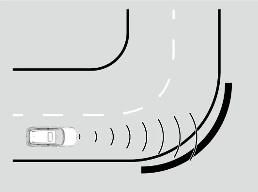
CMBS קען זיך אויך אנצינדן ווען עס איז כמעט נישטא קיין אמת'ע סכנה. ביישפילן: פארבייפארן א קאר וואס דרייט זיך אפ, טוישן ליין צו פארבייפארן א קאר, דרייוון שנעל אונטער א נידעריגן געביי אדער דורך א שמאלן טויער, דרייוון לענגאויס גארד-רעילס אויף א קורוו, צוקומען צו ווענט אדער געפארקטע קארס ביים פארקן, און פארבייפארן נאענט צו א קאר וואס שטייט געפארקט אויף דער גאס.
CMBS קען זיך אליין אויסלעשן, מיטן געלן safety support אינדיקאטאר וואס בלייבט אן, אין די פאלן: לאנג דרייוון אוועק פונעם וועג, אויף בערג אדער דרייענדיגע וועגן, שלעכט וועטער, דרייוון מיטן פארקינג ברעמז אן, א קאמערע וואס איז צו הייס, א צוגעדעקטע קאמערע אדער ראדאר (שמוץ, בלאטע, נאסער שניי, סטיקערס, פילם), אדער נישט-נארמאלע טייערס. ווען די סיבה גייט אוועק, למשל נאכן רייניגן, צינדט זיך CMBS צוריק אן פון זיך אליין.
Road Departure Mitigation (RDM) און Lane Departure Warning
RDM (העלפט נישט ארויסגיין פון וועג) ניצט די קאמערע ביי דער שויב צו קוקן אויף דריי זאכן: ווייסע אדער געלע ליין-ליניעס, דעם אויסערשטן עק פונעם וועג וואו ער טרעפט זיך מיט גראז אדער א שאטער-זייט, און א דערקענטן קאר וואס קומט אנטקעגן. Honda'ס פיטשער-גייד שרייבט אז Lane Departure Warning (ווארנונג ביים ארויסגיין פון ליין) איז א טייל פון RDM. LDW ווארנט אייך אויב איר הייבט אן ארויסצוגיין פון אייער ליין אן ניצן דעם בלינקער. RDM גייט ווייטער און קען אייך צוריקדרייען. אויב די קאמערע זעט נישט די ליין-ליניעס, גיט RDM נישט קיין הילף מיט קארס וואס קומען אנטקעגן. דער מאנואל איז קלאר אז האלטן דעם קאר אין זיין ליין איז שטענדיג אייער אחריות.
ווען RDM ארבעט, ווייזט זיך די Lane departure מעלדונג אויפן מיטער, די סיסטעם העלפט דרייען, און דער שטייער-ראד ציטערט שנעל. ווי נאר איר דרייט אליין דעם ראד, הערט עס אויף צו העלפן. אויב עס ארבעט עטליכע מאל אן קיין רעאקציע פון אייך, ביפט עס.
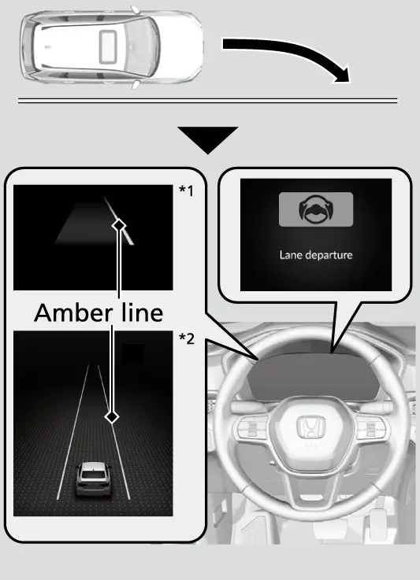
RDM ארבעט נאר ווען אלע די זאכן זענען אמת:
- די גיכקייט איז צווישן בערך 45 און 90 mph.
- דער וועג איז גלייך אדער א ביסל קרום.
- די בלינקערס זענען אויסגעלאשן.
- די סיסטעם רעכנט אז איר גיט נישט אקטיוו גאז, ברעמזט נישט און דרייט נישט.
דער לעצטער תנאי איז וויכטיג. אויב איר דרייט בכוונה, נעמט די סיסטעם אן אז איר מיינט עס. ניצט שטענדיג דעם בלינקער ביים טוישן ליין און RDM וועט שטיל בלייבן. RDM קען אויך ווייניגער גוט ארבעטן אויב איר דרייווט אויף דער אינעווייניגסטער זייט פון א קורוו, אויסער א ליין, אדער אין א שמאלן ליין.
איינשטעלונגען
אין Vehicle Settings קענט איר אויסקלייבן Warning only (נאר ווארנונג). די סיסטעם גיט דעמאלט די ווארנונגען אבער רירט נישט דעם שטייער-ראד. צו אינגאנצן אויסלעשן RDM, ניצט דעם Safety Support סקרין. נישט אזוי ווי CMBS, געדענקט RDM אייער לעצטע ברירה, אן אדער אויס, יעדעס מאל וואס איר הייבט אן דעם מאטאר. אויב מצבים פארשטעלן די קאמערע, קען RDM זיך אליין אויסלעשן און דער געלער safety support אינדיקאטאר בלייבט אן.
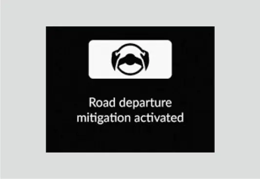
די פולע ליסטע פון פראבלעמען מיט ליין-ליניעס, ווי אפגעווישטע ליניעס, רעגן, שניי און וועג-ארבעט, איז גילטיג סיי פאר RDM און סיי פאר LKAS. קאפיטל 10 ערקלערט עס אין פרטים.
Adaptive Cruise Control (ACC) מיט Low-Speed Follow
ACC (קרוז וואס האלט אפשטאנד) האלט די גיכקייט וואס איר קלייבט אויס און האלט א געשטעלטן אפשטאנד הינטער א דערקענטן קאר פאראויס. אויב יענער קאר שטעלט זיך אפ, קען ACC אויך פאמעלעכער מאכן און אפשטעלן אייער CR-V. ווען ACC ברעמזט, צינדן זיך אן אייערע ברעמז לייטס.
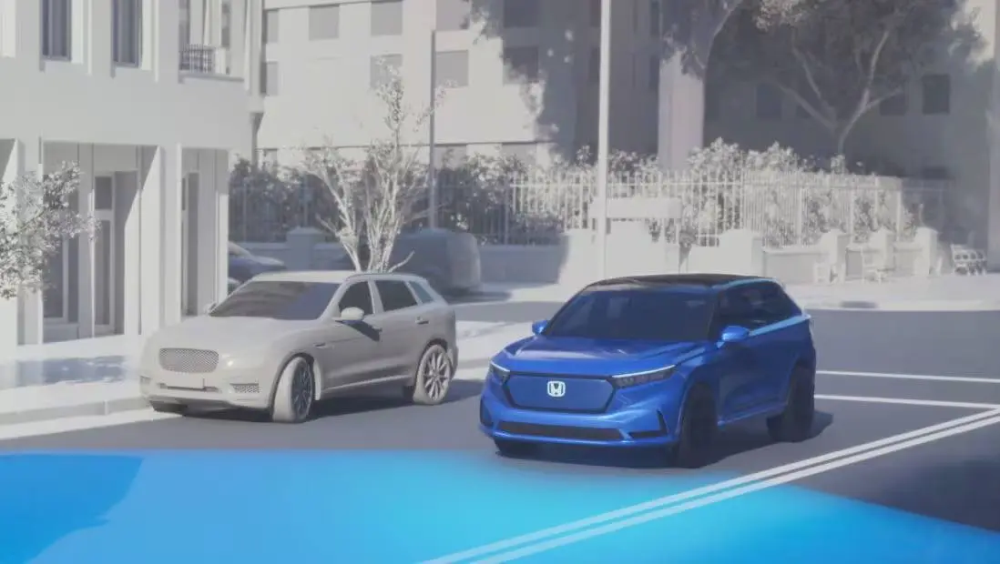
שטעלן א גיכקייט
אנצינדן ACC און שטעלן א גיכקייט
- דריקט דעם ACC קנעפל. דער אינדיקאטאר ווייזט זיך אין ווייס (standby).
- דרייווט בערך 20 mph אדער מער און נעמט אראפ דעם פוס פון די פעדאלן.
- ביי דער גיכקייט וואס איר ווילט, שטופט דעם −/RES/+ SET שאלטער ארויף אדער אראפ.
- לאזט אפ דעם שאלטער. די גיכקייט איז פעסט, דער אינדיקאטאר ווערט גרין, און דער קאר-בילדל, די interval שטריכן און די געשטעלטע גיכקייט ווייזן זיך.
אויב איר פארט אונטער בערך 20 mph אן דריקן דעם ברעמז, שטעלט דער שאלטער בערך 20 mph, נישט קוקנדיג אויף אייער יעצטיגע גיכקייט. ווען דער קאר שטייט, קענט איר שטעלן א גיכקייט אפילו מיטן ברעמז געדריקט. בשעת ACC ארבעט, גלייכט Straight Driving Assist (הילף צו פארן גלייך), א פונקציע פון דער עלעקטרישער סטירינג, אויס דאס נאטירליכע ציען פונעם ראד צו א זייט.
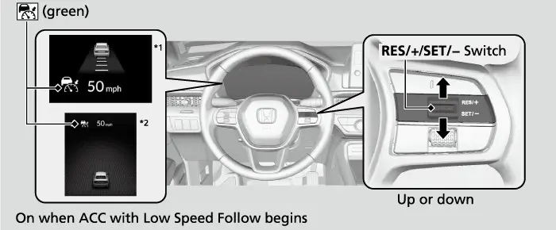
טוישן די גיכקייט
יעדער דרוק פונעם שאלטער ארויף אדער אראפ טוישט די געשטעלטע גיכקייט מיט בערך 1 mph. האלטן דעם שאלטער טוישט עס מיט בערך 5 mph. אויב דער קאר פאראויס פארט פאמעלעכער ווי אייער נייע גיכקייט, קען ACC נישט גיכער מאכן, ווייל עס האלט אייער אפשטאנד.
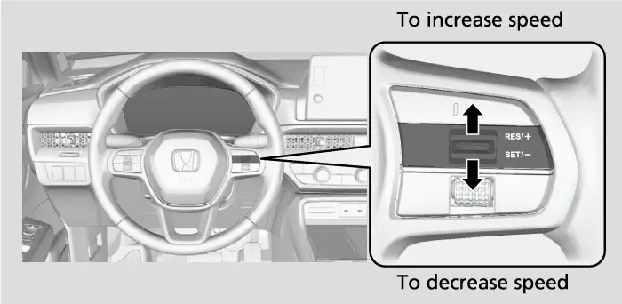
איר קענט דריקן דעם גאז צו פארן גיכער אויף א רגע. אין יענער צייט איז נישטא קיין ווארנונג, אפילו אויב א קאר איז נאענט. ווען איר לאזט אפ דעם פעדאל, גייט ACC צוריק צו האלטן דעם אפשטאנד. אויב איר דריקט דעם גאז, און דערנאך שטופט איר דעם שאלטער אראפ און לאזט אפ, ווערט אייער יעצטיגע גיכקייט די נייע געשטעלטע גיכקייט.
אפשטאנד פונעם קאר פאראויס
יעדער דרוק פונעם Interval קנעפל גייט דורך די אפשטאנדן אין דעם סדר: furthest (ווייטסטע), far (ווייט), mid (מיטל), nearest (נאענטסטע). די שטריכן אויפן מיטער ווייזן אייער ברירה. וואס גיכער איר פארט, אלץ לענגער ווערט יעדער אפשטאנד. דער מאנואל גיט די ביישפילן:
ACC אפשטאנדן
| איינשטעלונג | ביי 50 mph | ביי 65 mph | צייט אפשטאנד |
|---|---|---|---|
| Nearest | 72 ft | 95 ft | בערך 1 sec |
| איינשטעלונג | ביי 50 mph | ביי 65 mph | צייט אפשטאנד |
|---|---|---|---|
| Mid | 112 ft | 142 ft | בערך 1.5 sec |
| Far | 154 ft | 199 ft | בערך 2.1 sec |
| Furthest | 208 ft | 274 ft | בערך 2.9 sec |
קלייבט אויס דעם אפשטאנד לויט די באדינגונגען און פאלגט די לאקאלע געזעצן. א לענגערער אפשטאנד גיט אייך מער צייט צו רעאגירן. קוקט אויף די שטריכן יעדעס מאל וואס איר טוישט די איינשטעלונג, כדי איר זאלט שטענדיג וויסן אייער אפשטאנד. אויף פולע הייוועיס שניידן אנדערע דרייווערס אפט אריין אין קורצע אפשטאנדן. מיט nearest אויסגעקליבן, שניידן מער קארס אריין און ACC ברעמזט מער אפט. ווען ACC שטעלט אייך אפ הינטער א שטייענדיגן קאר, הענגט דער אפשטאנד צווישן די צוויי קארס אויך אפ אינעם אפשטאנד וואס איר האט אויסגעקליבן.
בשעת ACC ארבעט
אויב דער קאר פאראויס פארט פלוצלינג פאמעלעך, אדער אן אנדער קאר שניידט אריין פאר אייך, הערט זיך א ביפער און עס ווייזט זיך א מעלדונג. דריקט דעם ברעמז און האלט אליין א ריכטיגן אפשטאנד. ACC קען גיכער מאכן אפילו מיט א קורצן אפשטאנד אויב דער קאר פאראויס פארט בערך אזוי שנעל ווי איר אדער שנעלער, אדער אויב א קאר וואס האט אריינגעשניטן ציט זיך אוועק. ווען דער קאר פאראויס גייט ארויס פון אייער ליין, למשל ביי אן אינטערטשעינדזש אדער רעסט עריע, קען ACC האלטן דעם אפשטאנד נאך א קורצע צייט. ביים אראפפארן שטאציגע בערג ברעמזט ACC צו באגרעניצן די גיכקייט, אבער אייער גיכקייט קען נאך אלץ שטייגן העכער פון דער געשטעלטער גיכקייט. אין Vehicle Settings קענט איר אנצינדן א vehicle detect beep (ביפ ביים דערקענען א קאר), וואס הערט זיך ווען א קאר קומט אריין אדער גייט ארויס פון ACC'ס געגנט.
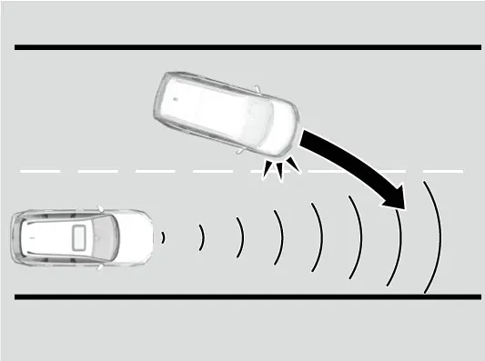
אפשטעלן און ווייטער פארן
ווען דער קאר פאראויס שטעלט זיך אפ, שטעלט זיך אייער CR-V אויך אפ און Stopped ווייזט זיך אויפן מיטער. ווען יענער קאר פארט אוועק, שטופט דעם שאלטער ארויף אדער אראפ, אדער דריקט דעם גאז, און ACC פארט ווייטער ביז אייער פריערדיגע געשטעלטע גיכקייט. אויב עס איז נישטא קיין קאר פאראויס ווען איר פארט אוועק, דריקט דעם גאז.
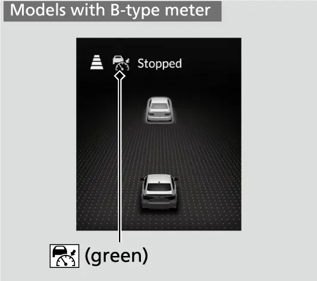
אפשטעלן און צוריק אנהייבן
וועגן צו אפשטעלן ACC
| וואס מען טוט | אינדיקאטאר | קען מען צוריק אנהייבן? |
|---|---|---|
| דריקן CANCEL | גרין צו ווייס | יא , ביי דער גרויער געשטעלטער גיכקייט |
| דריקן ברעמז בשעת מען פארט פאראויס | גרין צו ווייס | יא , ביי דער גרויער געשטעלטער גיכקייט |
| דריקן דעם ACC קנעפל | גייט אויס | ניין; צינדט נאכאמאל אן און שטעלט א נייע גיכקייט |
נאך CANCEL אדער דעם ברעמז, בלייבט אייער פריערדיגע געשטעלטע גיכקייט אויפן מיטער אין גרוי. שטופט דעם שאלטער ארויף און ACC הייבט צוריק אן ביי יענער גיכקייט, אפילו אויב דער קאר שטייט. אויב עס ווייזט זיך נישט קיין גרויע גיכקייט, שטעלט ארויפשטופן אייער יעצטיגע גיכקייט. דער מאנואל זאגט צו אויסלעשן ACC מיטן ACC קנעפל יעדעס מאל וואס איר ניצט עס נישט. אויב דער ראדאר דארף פארריכטן אדער ארויסנעמען, אדער די גריל באקומט א שטארקן קלאפ, לעשט אויס ACC מיטן ACC קנעפל און נעמט דעם קאר צום דילער.
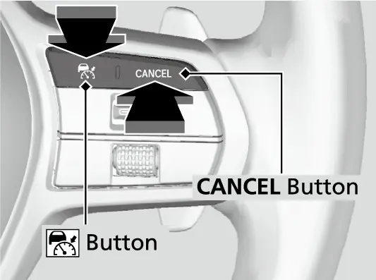
אויטאמאטיש אפשטעלן
ACC קען זיך אליין אפשטעלן, מיט א ביפ און א מעלדונג, אין יעדן פון די מצבים:
- שלעכט וועטער, אדער א שמוציגער ראדאר, קאמערע אדער געגנט פון דער שויב.
- דער קאר פאראויס ווערט מער נישט דערקענט.
- נישט-נארמאלע טייערס אדער גליטשן, לאנג דרייוון אויף בערג, אדער דרייוון אוועק פונעם וועג.
- פלוצלינג דרייען, אדער שנעל גאז געבן.
- ABS, VSA, CMBS אדער דער Post-Collision Braking System (ברעמזן נאך א קראך) ארבעט, אדער דער ABS, VSA אדער געלער parking brake/brake system אינדיקאטאר צינדט זיך אן.
- איר צינדט אן דעם פארקינג ברעמז מיט דער האנט, אדער שטעלט זיך אפ אויף א זייער שטאציגן שיפוע.
- א דערקענטער קאר איז צו נאענט, אדער איר זענט העכער פונעם מאקסימום לאסט.
- איר דרייווט דורך א פארמאכטן ארט ווי א טונעל.
- ברעמזן נאכאנאנד אויף א לאנגן אראפגאנג.
- ווען LKAS איז אן, און מען דערקענט נישט קיין דרייוון פון אייך פאר א געוויסע צייט.
טוישן צו געווענליכן קרוז קאנטראל
ACC קען מען טוישן צו געווענליכן קרוז קאנטראל. געווענליכער קרוז האלט א גיכקייט אבער האלט נישט קיין אפשטאנד פון קיינעם.
טוישן צווישן ACC און Cruise
- ווען ACC איז אן אבער קיין גיכקייט איז נישט געשטעלט, דריקט און האלט דעם Interval קנעפל איין סעקונדע.
Cruise mode selected .2 ווייזט זיך פאר צוויי סעקונדעס, און דער קרוז אינדיקאטאר צינדט זיך אן.
- שטעלט און טוישט די גיכקייט אויפן זעלבן אופן ווי מיט ACC.
- צו גיין צוריק צו ACC, דריקט און האלט נאכאמאל דעם Interval קנעפל איין סעקונדע.

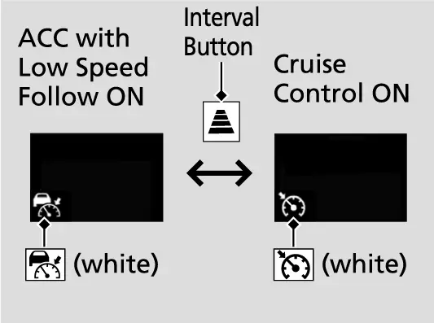
געווענליכן קרוז קען מען שטעלן נאר ביי בערך 20 mph אדער מער. עס שטעלט זיך אויטאמאטיש אפ ביי 17 mph אדער ווייניגער, און צוריק אנהייבן די גרויע געשטעלטע גיכקייט דארף אויך כאטש 20 mph. מען קען נישט טוישן מאדָעס בשעת א גיכקייט איז געשטעלט אדער ווען ACC איז נישט אקטיוו.
Lane Keeping Assist System (LKAS)
LKAS (העלפט בלייבן אין ליין) גיט צו א לייכט דרייען כדי אייך צו האלטן אין מיטן פון א דערקענטן ליין, און ווארנט אייך אויב איר רוקט זיך אוועק. עס האט צוויי פונקציעס:
- Lane Keep Support (שטיצע אין ליין): די עלעקטרישע סטירינג ווערט שווערער ווען איר קומט צו צו א ווייסער אדער געלער ליניע, און פירט אייך צוריק צום מיטן.
- Lane Departure Warning (ווארנונג ביים ארויסגיין פון ליין): א לייכטע ציטערונג פונעם שטייער-ראד און א ווארנונג אויפן דיספליי ווען איר גייט אריין אין דער ווארן-געגנט.
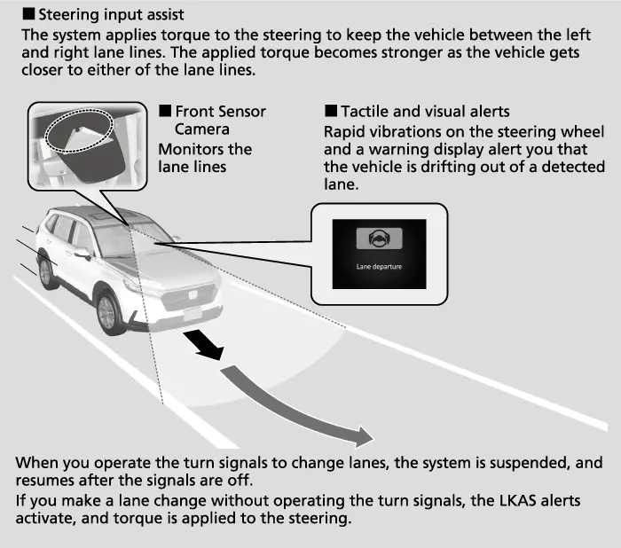
LKAS ארבעט ווען אלע די זאכן זענען אמת: די גיכקייט איז צווישן בערך 45 און 90 mph, עס זענען דא דערקענבארע ליניעס אויף ביידע זייטן מיטן קאר נאענט צום מיטן, דער וועג איז גלייך אדער א ביסל קרום, די בלינקערס זענען אויסגעלאשן, און מען דריקט נישט פלוצלינג דעם ברעמז. Honda'ס פיטשער-גייד לייגט צו אז עס קען דערקענען Botts' Dots (קליינע בולבעס אויפן וועג) און אנדערע ליין-צייכנס. דער מאנואל זאגט אז LKAS קען נישט ארבעטן ווי געפלאנט אין טראפיק וואס שטייט און גייט אפט, אדער אויף שארפע קורוון.
ניצן LKAS
- דריקט דעם LKAS קנעפל. דער LKAS אינדיקאטאר ווייזט זיך אין ווייס (standby).
- ווען די קאמערע דערקענט די ליין-ליניעס, ווייזן זיך ווייסע ליניעס אויפן מיטער.
- האלט דעם קאר נאענט צום מיטן פונעם ליין.
- ווען די סיסטעם הייבט אן צו ארבעטן, ווערן דער אינדיקאטאר און די ליניעס גרין.
- דריקט נאכאמאל LKAS צו אויסלעשן.
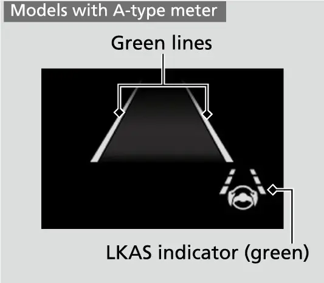
אויב די באדינגונגען זענען שוין ריכטיג ווען איר דריקט דעם קנעפל, גייט LKAS גלייך צו אן אן standby. LKAS לעשט זיך אויס יעדעס מאל וואס איר שטעלט אפ דעם מאטאר, דעריבער דארפט איר עס נאכאמאל דריקן אויף יעדער פאר. מאכט עס א טייל פון אייער געוואוינהייט ווען איר פארט ארויף אויפן הייוועי.
אויטאמאטיש אפווארטן און אפשטעלן
LKAS קען זיך אליין אפשטעלן אויף א צייט. ווען דאס געשעט, ווערן די גרינע ליניעס ווייס אדער פארשווינדן, און עס הערט זיך א ביפ אויב דער ביפ איז אנגעצונדן. סיבות:
- דער קאר איז אוועק צו א זייט פונעם ליין.
- די ליין-ליניעס ווערן נישט דערקענט.
- שנעל דרייען, אדער איר דרייט בכלל נישט.
- א שארפער קורוו.
- גיכקייט העכער פון בערך 94 mph.
- ABS אדער VSA ארבעט, אדער מען דריקט פלוצלינג דעם ברעמז.
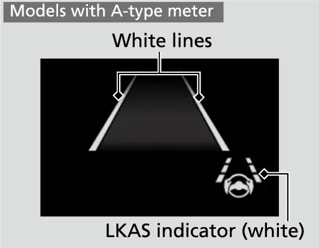
LKAS הייבט זיך צוריק אן אליין ווען דער מצב איז פארביי. א זייער הייסע קאמערע, אדער א שמוציגע קאמערע-געגנט אדער שויב, קען עס אינגאנצן אפשטעלן. דעמאלט קענען די ליניעס פארשווינדן און א ביפ קען זיך הערן. אין Vehicle Settings קענט איר אן- אדער אויסלעשן דעם suspend ביפ.
Traffic Jam Assist
Traffci Jam Assist (הילף אין טראפיק) איז בלייבן אין ליין פאר פאמעלעכן טראפיק. ווען LKAS איז אן און איר זענט אין שווערן טראפיק, דרייט עס כדי צו העלפן אייך האלטן אין מיטן ביי גיכקייטן פון בערך 0 ביז 45 mph. צוזאמען דעקן LKAS און Traffci Jam Assist ביידע גיכקייט-געגנטן פונעם זעלבן קנעפל. אלע די תנאים מוזן זיין:
- LKAS איז אן.
- עס זענען דא ליניעס אויף ביידע זייטן און דער קאר איז נאענט צום מיטן.
- דער וועג איז גלייך אדער א ביסל קרום.
- אייערע הענט האלטן דעם שטייער-ראד.
- דער שיפט איז אין D, S אדער L, די דרייוו פאזיציעס וואס דער מאנואל רעכנט אויס.
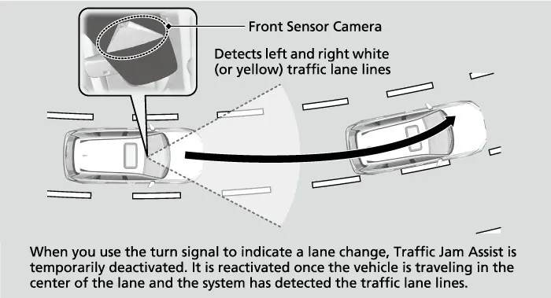
ווען איר נעמט איבער דאס דרייען אינגאנצן, ווארט זיין הילף. דער כח פון דרייען קען זיין נישט באמערקבאר ווען איר דרייט שטארק אדער אויף א גראבן וועג. אויב איר רוקט זיך אוועק אן בלינקער, באקומט איר א קלאנג און א ווארנונג אויפן דיספליי.
אויב איר נעמט אראפ די הענט פונעם ראד אדער דרייט נישט גענוג, ווייזט זיך א ווארנונג אויפן מיטער. אויב איר האלט נאך אלץ נישט דעם ראד נאך עטליכע ווארנונגען, הערט זיך א באזער און Traffci Jam Assist שטעלט זיך אפ .
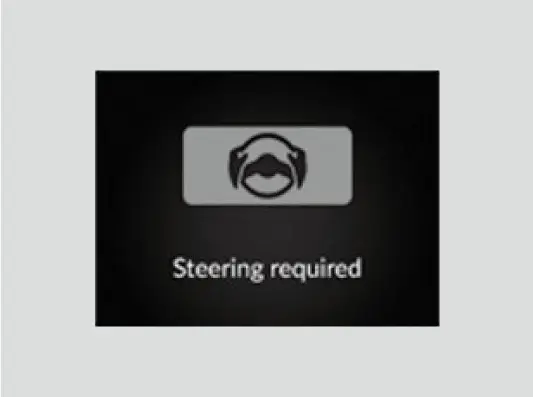
Traffci Jam Assist קען ווארטן ווען ליניעס פעלן, ביי שארף דרייען, ווען מען דרייט נישט, ביי שארפע קורוון אדער ביי פלוצלינג ברעמזן, און עס הייבט זיך צוריק אן אליין. עס שטעלט זיך אפ ביי א הייסער קאמערע אדער א שמוציגער שויב. דריקט LKAS צו אויסלעשן. זיין suspend ביפ ווערט קאנטראלירט דורך דער Lane keeping assist suspend beep איינשטעלונג. אויב דער קאר רוקט זיך צו שטארק צו די ליניעס בשעת עס ארבעט, לעשט עס אויס און גייט צום דילער.
Traffic Sign Recognition (TSR)
TSR (דערקענט וועג-שילדן) ניצט די קאמערע ביי דער שויב צו לייענען וועג-שילדן, למשל דעם ספיד לימיט וואס איר זענט יעצט פארבייגעפארן. עס ווייזט דעם שילד אויפן מיטער פאר א געשטעלטע צייט און שטרעקע. אויב איר פארט שנעלער ווי א דערקענטער ספיד לימיט מיט דער געשטעלטער גרענעץ, בלינקט דער שילד-בילדל. אויב קיין שילד ווערט נישט דערקענט, ווייזט זיך נישט קיין בילדל. דער בילדל קען זיך טוישן אדער פארשווינדן ווען די סיסטעם דערקענט דעם סוף פון א לימיט, אדער ווען איר דרייט זיך אפ ביי אן אינטערסעקשאן מיטן בלינקער אן.
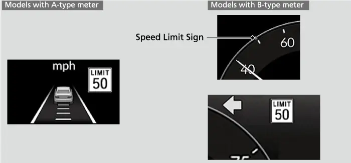
אין Vehicle Settings קענט איר אן- אדער אויסלעשן TSR און טוישן די ווארן-גרענעץ. פון אנהייב איז די גרענעץ דער דערקענטער ספיד לימיט אליין.
דער מאנואל איז אפן וועגן TSR'ס באגרעניצונגען. נישט יעדער שילד וועט זיך ווייזן, און עס קען ווייזן א לימיט העכער אדער נידעריגער ווי דער אמת'ער. געווענליכע פראבלעם-ערטער:
- שילדן מיט עקסטערע טאוולען פאר צייט, וועטער, סארט קאר אדער סקול זאנעס.
- אפגעבלאסטע, געבויגענע, אויסגעדרייטע, שמוציגע אדער פארשנייטע שילדן.
- עלעקטראנישע שילדן וואס זענען צו ליכטיג, צו טונקל אדער שווער צו לייענען.
- שילדן ביי אן עקזיט ראמפ אדער זייט-וועג וואס זענען נישט פאר אייער ליין.
- ביינאכט, רעגן, נידעריגע זון, טונעלן און הויכע גיכקייטן.
נעמט דעם נומער אויפן דיספליי אלס א דערמאנונג, קיינמאל נישט דאס לעצטע ווארט. דער שילד אויפן וועג איז וואס ציילט. אויב די TSR malfunction מעלדונג ווייזט זיך אויפן מיטער און גייט נישט אוועק, לאזט טשעקן דעם קאר ביים דילער.
Auto High-Beam
Auto High-Beam (אויטאמאטישע הויכע ליכט) ניצט די זעלבע קאמערע צו טוישן ביינאכט צווישן הויכע און נידעריגע ליכט. די סיסטעם ארבעט, און דער auto high-beam אינדיקאטאר צינדט זיך אן, ווען אלע די זאכן זענען אמת:
- דער power מאדָע איז ON.
- דער ליכט שאלטער איז אויף AUTO.
- דער לעווער איז אין דער נידעריגער ליכט פאזיציע.
- די ליכט האבן זיך אנגעצונדן אויטאמאטיש.
- עס איז טונקל דרויסן.


ווען די ליכט טוישן זיך
| הויכע ליכט דארף אלע | נידעריגע ליכט קומט צוריק מיט איינס פון |
|---|---|
| גיכקייט 23 mph אדער מער | גיכקייט 15 mph אדער ווייניגער |
| קיין באלויכטענע קארס פאראויס אדער אנטקעגן | א באלויכטענער קאר פאראויס אדער אנטקעגן |
| ווייניג גאס לאמפן | אסאך גאס לאמפן |
די סיסטעם האלט די נידעריגע ליכט אן ווען די ווייפערס ארבעטן אויף הויכער גיכקייט, אדער ווען די קאמערע דערקענט געדיכטן נעפל.
אויב די טיימינג פאסט אייך נישט, טוישט די ליכט אליין. ניצן דעם לעווער אדער דעם ליכט שאלטער לעשט אויס דעם auto high-beam אינדיקאטאר און שטעלט אפ די סיסטעם. צו ברענגען עס צוריק, ציט דעם לעווער צו אייך און לאזט אפ, אדער דרייט דעם ליכט שאלטער ארויס פון AUTO און צוריק צו AUTO מיטן לעווער אין דער נידעריגער ליכט פאזיציע. טוט די זעלבע טריט אויב דער אינדיקאטאר צינדט זיך נישט אן הגם אלע תנאים זענען דא .
די סיסטעם קען האבן שוועריגקייטן אין די מצבים: מאטארסייקלס, בייסיקלס, מאביליטי סקוטערס און אנדערע קליינע פארמיטלען וואס קומען אנטקעגן; זייער ליכטיגע אדער זייער שוואכע ליכט פון אנדערע קארס; רעגן, שניי, נעפל אדער פראסט אויף דער שויב; גראבע אדער קרומע וועגן; שילדן וואס שפיגלען אפ; שטאט באלייכטונג; א שווערע לאסט הינטן; און קארס פון אנטקעגן באהאלטן הינטער ביימער אדער מעדיען בעריערס. איר קענט אן- אדער אויסלעשן די גאנצע סיסטעם אין Vehicle Settings. דער ליכט שאלטער און דרייוון ביינאכט ווערן ערקלערט אין קאפיטל 11.
Blind Spot Information System (BSI)
BSI (ווארנט פון א קאר אין בלינדן ווינקל) קוקט אויף די ליינס נעבן אייך און הינטער אייך מיט ראדאר סענסארס אין די עקן פונעם הינטערשטן באמפער. עס צינדט אן א לעמפל אינעם דרויסנדיגן שפיגל אויף דער זעלבער זייט. Honda'ס פיטשער-גייד שרייבט אז BSI איז סטאנדארט אויפן EX און העכער. עס ארבעט ווען איר פארט פאראויס ביי בערך 20 mph אדער מער. דאס שפיגל-לעמפל צינדט זיך אן ווען:
- א קאר פארט אייך פארביי מיט א חילוק אין גיכקייט פון נישט מער ווי בערך 31 mph.
- איר פארט פארביי א קאר מיט א חילוק אין גיכקייט פון נישט מער ווי בערך 12 mph.
א זייער שנעלער קאר וואס קומט צו קען עס נישט אנצינדן.
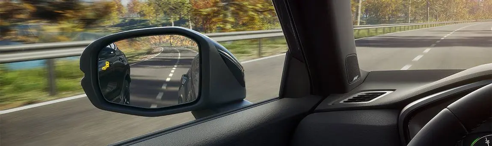
ווארן-געגנטן
BSI ווארן-געגנט
| געגנט | בערך ווייט |
|---|---|
| צו דער זייט | 1.6 ביז 10 פיס פונעם קאר |
| הינטן | בערך 10 פיס פונעם הינטערשטן באמפער |
| פארלענגערט (ווייטער הינטן) | 10 ביז 82 פיס הינטער'ן באמפער |
אין דער פארלענגערטער געגנט ווערן שנעלערע קארס וואס קומען צו דערקענט פון ווייטער. א נייער קאר הייבט אן נאר מיט ווארן-געגנט 1. נאך דרייוון אויף גלייכע וועגן מיט טראפיק און זאכן לענגאויס דעם וועג, פאסט זיך די סיסטעם צו און ברייטערט זיך אויס צו געגנטן 1 און 2. נאך א פארריכטונג פונעם הינטערשטן באמפער אדער פון דער סיסטעם, גייט עס צוריק צו געגנט 1 ביז עס פאסט זיך נאכאמאל צו. האלט די עקן פונעם באמפער ריין און קלעבט קיינמאל נישט דארט קיין לעיבלס אדער סטיקערס.
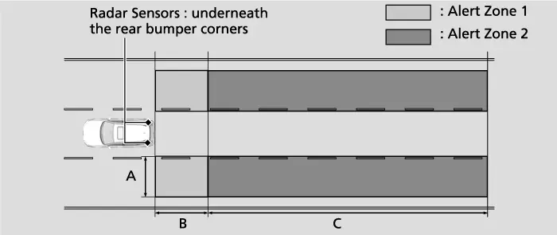
אויב דאס שפיגל-לעמפל איז אן און איר בלינקט צו יענער זייט, בלינקט דאס לעמפל און דער ביפער קלינגט 3 מאל. דאס איז אייער סימן צו בלייבן אין אייער ליין.
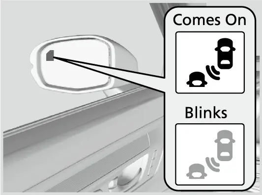
BSI ווערט אן- און אויסגעלאשן אויפן Safety Support סקרין, און עס געדענקט אייער ברירה יעדעס מאל וואס איר הייבט אן דעם מאטאר. לעשט עס אויס ווען איר שלעפט א טרעילער, ווייל דער טרעילער אליין קען עס אנצינדן, און די עקסטערע וואג בייגט דעם קאר און טוישט וואס דער ראדאר זעט. BSI קען פארפעלן מאטארסייקלס און קליינע פארמיטלען, קארס וואס רוקן זיך אריבער פון א ווייטן ליין, געפארקטע קארס און קארס אויף קורוון. עס האט אויך שוועריגקייטן אין שווערן רעגן, שניי אדער נעפל, ביי ראדאר שטערונגען, מיט שמוציגע אדער קאליע געווארענע באמפער-עקן, און מיט א בייסיקל-רעק הינטן. אויב די סיסטעם קען נישט ארבעטן, ווייזט זיך די Blind spot information system not available מעלדונג. לאזט טשעקן BSI ביים דילער אויב דער הינטערשטער באמפער באקומט א שטארקן קלאפ, אדער דאס לעמפל צינדט זיך נישט אן ווען עס דארף.
Cross Traffic Monitor
Cross Traffic Monitor (ווארנט פון קארס פון די זייטן ביים צוריקגיין) העלפט ווען איר פארט צוריק ארויס פון א פארקינג פלאץ. עס ארבעט ווען אלע די זאכן זענען אמת: די power איז ON, די סיסטעם איז אנגעצונדן, דער שיפט איז אין R, און דער קאר פארט 3 mph אדער ווייניגער. אויב א קאר קומט צו פון א הינטערשטן עק, הערט זיך א באזער און א פייל ווייזט זיך אויף יענער זייט פונעם הינטערשטן קאמערע סקרין. Honda'ס פיטשער-גייד שרייבט אז עס דערקענט קארס וואס קומען צו ביי בערך 6 ביז 16 mph.
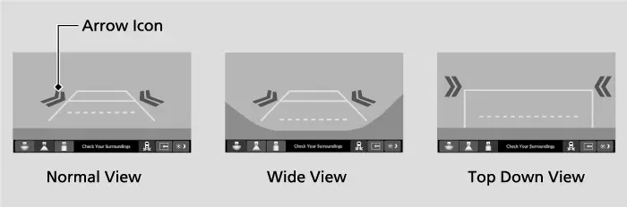
עס דערקענט נישט קארס וואס קומען גלייך פון הינטן, און עס ווארנט נישט מער ווען א קאר איז שוין גלייך הינטער אייך. עס איגנארירט קארס וואס פארן אוועק, און קען ווארנען פאר פוסגייער, בייסיקלס אדער שטייענדיגע זאכן. דערקענען קען אויך נישט ארבעטן אדער פארשפעטיגט ווערן אויב א וואנט אדער אן אנדער קאר פארשטעלט דעם סענסאר'ס בליק, ביי שלעכט וועטער, אויף א שיפוע, מיט א שווערע לאסט הינטן, ביים צוריקגיין צו א וואנט אדער סלופ, אדער ווען די באמפער-עקן זענען שמוציג אדער קאליע. צינדט אן אדער לעשט אויס די סיסטעם דורך אנטאפן איר בילדל אונטן אויף דער הינטערשטער קאמערע, אדער דורך די customized settings אויפן טאטש-סקרין.
קוקט אויף דעם Cross Traffic Monitor בילדל אונטן רעכטס אויפן קאמערע סקרין. אויב עס ווערט געל ווען איר שיפט אין R, קען בלאטע, שניי אדער אייז פארשטעלן א סענסאר און די סיסטעם איז אויף א צייט אפגעשטעלט. טשעקט און רייניגט די עקן פונעם הינטערשטן באמפער. אויב עס ווייזט זיך אנשטאט דעם דער סיסטעם'ס פראבלעם-סימבאל, אדער דער דיספליי טוישט זיך נישט אין R, קען זיין א פעלער אינעם Cross Traffci Monitor אדער אין דער הינטערשטער קאמערע סיסטעם. פארלאזט אייך נישט דערויף, און גייט צום דילער. די סיסטעם קען נישט דערקענען יעדן קאר, דעריבער גייט פאמעלעך צוריק, ניצט די שפיגלען און דרייט זיך אום צו קוקן. די הינטערשטע קאמערע און פארקן ווערן ערקלערט אין קאפיטל 15.
Driver Attention Monitor
Honda'ס פיטשער-גייד שרייבט אז דער Driver Attention Monitor (קוקט אויף דעם דרייווער'ס אויפמערקזאמקייט) איז אויף יעדן CR-V טרים. א ווינקל-סענסאר מעסט וויפיל איר פארריכט דאס דרייען כדי צו בלייבן אין ליין. אויב עס שפירט צופיל פארריכטונגען, שלאגט עס פאר א הפסקה.
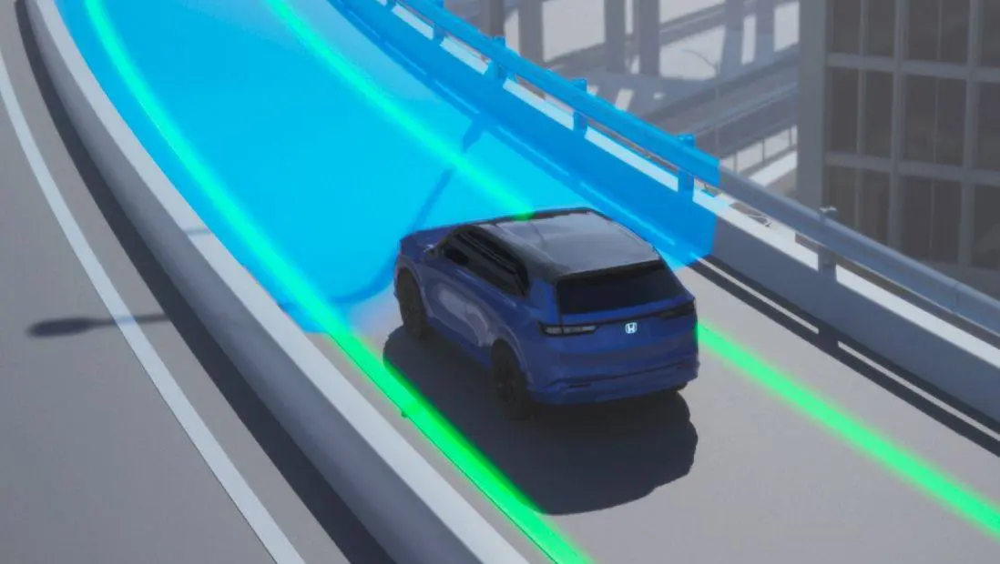
Driver Attention Monitor שטאפלען
| שטריכן | באדייט |
|---|---|
| 3 אדער 4 | נארמאלע אויפמערקזאמקייט |
| 1 אדער 2 | נעמט איבער דעם דיספליי מיט א מעלדונג צו מאכן א הפסקה |
| ערגער | שטארקערע ווארנונג אויפן דיספליי, קלאנג און ציטערונג פונעם שטייער-ראד |
עס ארבעט שטענדיג אינעם הינטערגרונט, און זיינע ווארנונגען קען מען צופאסן אין די meter settings. ווען איר זעט די הפסקה-מעלדונג, פארט אראפ צו דער זייט אויף א זיכערן אופן און רוט זיך אפ.
ווען איר מוזט אליין איבערנעמען
די זענען די מאמענטן ווען דער מאנואל זאגט אז איר מוזט איבערנעמען:
- א קראך-ווארנונג: ברעמזט און דרייט גלייך.
- א ביפ פון אריינשניידן מיט ACC: ברעמזט.
- Stopped אויפן מיטער מיט ACC: בלייבט אינעם קאר.
- רעגן, שניי, אייז, טאל פלאזעס אדער פארקינג ערטער: ניצט נישט ACC אדער Traffci Jam Assist.
- LKAS און Traffci Jam Assist: האלט די הענט אויפן ראד.
- א באלויכטן BSI שפיגל-לעמפל: טוישט נישט ליין.
- א געלער אינדיקאטאר: רייניגט די קאמערע, ראדאר אדער באמפער-עקן; אויב עס בלייבט אן, גייט צום דילער.
אפטע פראגעס
פראגע: פארוואס ווייזט LKAS ווייס יעדעס מאל וואס איך הייב אן דעם קאר, הגם איך האב עס נעכטן גענוצט?
ענטפער: LKAS לעשט זיך אויס יעדעס מאל וואס איר שטעלט אפ דעם מאטאר. דריקט דעם LKAS קנעפל אויף יעדער פאר. CMBS טוט פונקט פארקערט: עס קומט שטענדיג צוריק אן ביים אנהייבן דעם מאטאר.
פראגע: קען איך אויסלעשן דאס פארריכטן דרייען פון RDM אבער האלטן די ווארנונגען?
ענטפער: יא . קלייבט אויס Warning only אין Vehicle Settings. די סיסטעם ווארנט אייך דעמאלט אבער רירט נישט דעם שטייער-ראד. צו אינגאנצן אויסלעשן RDM, ניצט דעם Safety Support סקרין. RDM געדענקט אייער ברירה.
פראגע: עטליכע געלע לייטס האבן זיך אנגעצונדן נאכן טוישן די באטעריע. איז עפעס צובראכן?
ענטפער: מסתמא נישט. דרייווט א קורצע שטרעקע מער ווי 12 mph און די אינדיקאטארן דארפן אויסגיין. אויב איינער בלייבט אן, לאזט טשעקן דעם קאר ביים דילער.
פראגע: קען איך פארריכטן א שפליטער אין דער שויב?
ענטפער: שאדן אינעם קאמערע'ס בליק-פעלד קען מאכן אז די סיסטעמען זאלן נישט ארבעטן ריכטיג. Honda רעקאמענדירט אן ארגינעלע Honda שויב פארן טוישן, און א דילער מוז נאכדעם קאליברירן די קאמערע. אפילו קליינע פארריכטונגען אין יענער געגנט קענען מאכן פראבלעמען.
פראגע: פארוואס נעמט ACC נישט אן קיין געשטעלטע גיכקייט ביי נידעריגע גיכקייט אין Cruise מאדָע?
ענטפער: געווענליכן קרוז קען מען שטעלן אדער צוריק אנהייבן נאר ביי בערך 20 mph אדער מער, און עס שטעלט זיך אויטאמאטיש אפ ביי 17 mph אדער ווייניגער. ACC אליין קען מען שטעלן ביי פאמעלעכער פארן, אין וועלכן פאל שטעלט עס בערך 20 mph, אדער ווען דער קאר שטייט.
פראגע: זאל איך לאזן BSI אן ווען איך שלעפ א טרעילער?
ענטפער: ניין. דער מאנואל זאגט צו אויסלעשן BSI ביים שלעפן, ווייל דער טרעילער קען אנצינדן די ווארנונגען און די עקסטערע וואג טוישט וואס דער ראדאר זעט.
הויפט פונקטן
- יעדע Honda Sensing סיסטעם העלפט נאר; איר בלייבט פאראנטווארטליך פאר דרייען און ברעמזן.
- איין קאמערע הינטער'ן שפיגל און ראדארס הינטער'ן גריל עמבלעם און אין די עקן פונעם הינטערשטן באמפער טוען דאס דערקענען, דעריבער האלט זיי ריין און אפן.
- גרין מיינט ארבעט, ווייס מיינט standby, געל מיינט א פראבלעם אדער א פארשטעלטער סענסאר.
- CMBS קומט צוריק אן ביי יעדן אנהייב; RDM און BSI געדענקען אייער ברירה; LKAS מוז מען דריקן אויף יעדער פאר.
- ניצט ACC און Traffci Jam Assist נאר אויף הייוועיס ביי גוט וועטער, און קיינמאל נישט ארויסגיין פונעם קאר בשעת ACC האלט אים אפגעשטעלט.
- ווייסט צי איר זענט אין ACC אדער אין געווענליכן Cruise, ווייל Cruise מאכט נישט פאמעלעכער פאר טראפיק.
- TSR, BSI און Cross Traffic Monitor זענען דערמאנונגען: לייענט דעם שילד אויפן וועג, קוקט אין די שפיגלען און קוקט זיך אום פאר איר רירט זיך.